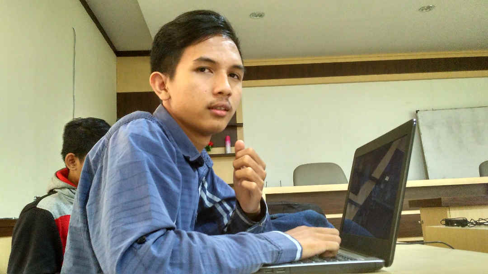
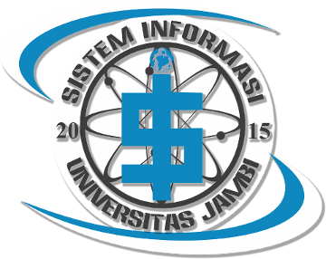
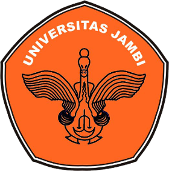

M. Wiguna Saputra
M. Wiguna Saputra, Lahir di Bangko, 30 Juli 1998, adalah seorang Programmer dan Web Developer. Sedang mengampu studi S1 Sistem Informasi di Universitas Jambi. Memiliki sedikit kemampuan di bidang jaringan komputer dan hardware. Menggeluti dunia IT sejak tahun 2015.

Sistem Informasi Universitas Jambi
Sistem Informasi Universitas Jambi didirikan pada tahun 2013 di bawah naungan Fakultas Sains Dan Teknologi. Sistem Informasi Unja memfokuskan untuk menciptakan mahasiswa yang ahli dalam bidang pemrograman, jaringan komputer, serta analisis sistem.

Programming Skills
Organization
PHP Indonesia
PHP Indonesia adalah komunitas pemrogram berbasis Bahasa Scripting PHP yang pertama kali disusun oleh Rasmus Lerdorf kemudian dikembangkan oleh Zeev Surasky dan Andy Gutzman dengan interpreteur Zend Engines, serta dikembangkan oleh anggota komunitas dari seluruh dunia. Untuk saat ini, bahasa scripting PHP merupakan salah satu bahasa pemrograman berbasis web yang sangat popular, sehubungan dengan trend bisnis saat ini yang cenderung menggunakan aplikasi berbasis web.
Gerakan Revolusi Teknologi
Gerakan Revolusi Teknologi (GREVTECH) adalah organisasi penggiat IT yang bertujuan untuk membuat gebrakan revolusi teknologi yang ada di Indonesia. Selain dari tujuan tersebut, GREVTECH juga merupakan relawan IT yang siap membantu komunitas lain untuk berkembang dengan memanfaatkan teknologi informasi.